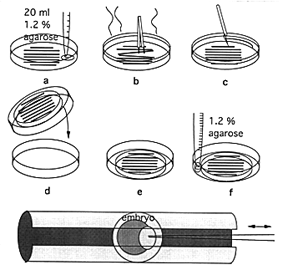

We have developed a new inexpensive and easy method to position zebrafish embryos for microinjection. Our technique is a simplification of the method published by Eric S. Weinberg (Zebrafish Science Monitor 2(1):4-5) and of the method taught by Manfred Schartl in the course "Gene Expression and Regulation in Laboratory Fish", Würzburg Germany, Feb. 1993.
Embryos in their chorions are pushed into depressions in an agarose disk which are formed with 1 mm capillaries. The depressions are round and gently "hug" the embryos in such a way that the embryos remain in the depression during microinjections and while the micropipette is pulled out after injection. There is, thus, no need to use a plastic cover for impeding the movement of the embryos as described in the previous method. In addition, once the embryos are positioned, the tray can be moved around without the embryos changing their positions.

Microinjection embryo tray
1. Place a few 1 mm x 5-6 cm glass capillaries (W.P.I.) on the bottom of a 90 x 15 mm petri dish. Pour 20 ml of warm 1.2% agarose (prepared in embryo medium containing 1 ppm methylene blue) over the capillaries (Fig.-a). Once the capillaries start floating, push them back down to the bottom of the plate with fine forceps and arrange them in parallel rows (Fig.-b).
2. When the agarose has solidified, reduce the diameter of the agarose disk by cutting around its perimeter with a razor blade (Fig.-c). Turn the dish over and let the agarose disk containing the gel-coated capillaries fall onto another wet petri dish (Fig.-d,e). Seal the dish onto the plate with more warm, liquid agarose (Fig.-f).
3. Cover the capillaries with embryo medium and gently remove them from the agarose with fine forceps. U-shaped grooves remain in the agarose. The plate can be stored in the cold and reused for several injections.
4. Gently squeeze the embryos, still in their chorions, into the grooves and orient them towards the injection pipette with fine forceps hooded with a plastic tip. We prefer to orient the embryos with their animal poles towards the pipette (Fig.-bottom). More then 20 embryos can be lined up in each groove.
5. For microinjection we move the petri dish by hand to position the embryo below the injection pipette. We use a foot pedal controlled Eppendorf 5242 microinjector, position the micropipettes with a Leitz micromanipulator, and monitor the procedure with a Wild stereo-microscope at x32 magnification.
6. Following injection, lift the embryos up out of the grooves.